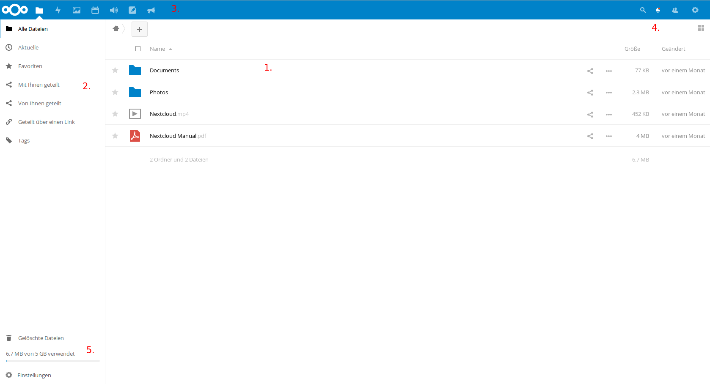

Zugriff auf die Cloud¶
Zugriff auf die Cloud im Browser erhalten Sie, indem sie auf der Startseite der schuleigenen Homepage auf den Link „copbox“ klicken oder im Browser direkt folgende URL eingeben:
https://owncloud.copernicus-gymnasium.de/owncloud
Dort können Sie sich mit ihren Accountdaten anmelden.
Die Startseite¶
Nach der erfolgreichen Anmeldung im Browser gelangen sie zur Startseite der Cloud. Hier sehen sie ihr Cloudverzeichnis und die darin enthaltenen Dateien und Ordner.
Den meisten Platz nimmt die Übersicht über die Ordner und Dateien, die sich in ihrem Cloudverzeichnis befinden (1.). Weiterhin sehen sie am linken Rand einen Bereich, der Ihnen bei Bedarf genauere Informationen über die von oder mit Ihnen geteilten Dateien bietet (2.). Einen schnellen Überblick, wer Ihnen eine Datei oder einen Ordner geteilt hat, finden Sie rechts neben den Dateien/Ordnern. Steht da lediglich “Geteilt”, klicken Sie auf dieses Wort, um genauere Informationen zu erhalten. Links oben neben dem Cloud-Symbol befinden sich die verschiedenen Anwendungen (“Apps”), die Ihnen die Cloud bietet(3.).
Sie sehen folgende Bereiche (von links nach rechts):
- “Dateien”: bringt Sie zurück zur Übersicht ihrer Dateien und Ordner
- “Aktivität”: hier finden sie Informationen über die mit oder von Ihnen geteilten Dateien und wer, wann, was damit gemacht hat.
- “Galerie”: eine Sammlung aller Bilder, die sie auf der Cloud gespeichert haben.
- “Kreise”: bietet die Möglichkeit, Gruppen zu erstellen, um Dateien einfach mit mehreren Benutzern zu teilen.
- “Kalender”: wie der Name schon sagt, können Sie hier einen Kalender führen, andere Kalender einbinden, diese Kalender mit anderen teilen oder mit den Geräte zu Hause synchronisieren.
- “Audio-Player”: bietet Ihnen die Möglichkeit, Audio-Dateien direkt aus der Cloud heraus abzuspielen.
- “Notizen”: Raum für Notizen, Gedanken, Einfälle
- “Ankündigungen”: Hier finden Sie Mitteilungen des Admins, die sicherlich immer einen Blick wert sind.
Oben rechts auf der Startseite können Sie nach einem Klick auf die Lupe nach Dateien suchen. Rechts daneben sehen Sie eine Schaltfläche mit einer Glocke. Hier verbergen sich Ankündigungen des Administrators oder sonstige Benachrichtigungen. Ein Klick auf das Icon mit den beiden angedeuteten Personen zeigt Ihnen alle Benutzer der Cloud an, mit denen Sie Dateien geteilt haben. Ganz rechts bringt Sie ein Klick auf das Zahnrad zu den Einstellungen ihres Nutzerprofils (4.)
Unten links sehen Sie die Schaltfläche “Gelöschte Dateien”. Hier verbergen Sie von Ihnen gelöschte Dateien, die sie bei Bedarf wiederherstellen können. Darunter wird Ihnen die aktuelle Belegung Ihres Cloudspeichers angezeigt. Ganz unten finden Sie den Punkt “Einstellungen”. Ein Klick darauf gibt einerseits die Möglichkeit versteckte Dateien in Ihrer Cloud anzuzeigen, andereseits wird hier auch ein WebDav-Link zu ihrem Cloudspeicher erzeugt, mit dessen Hilfe es möglich ist, Ihr Cloudverzeichnis in andere Geräte einzubinden (5.).